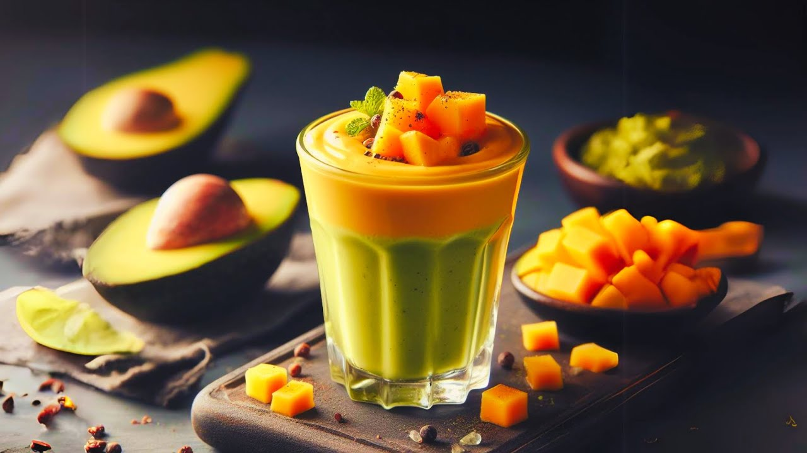

Here we have the smoothie you never knew you've always wanted! Its filled
with all the goodness to keep your system running at optimal functions, as
well as a protein punch to keep your muscles happy and topped off with a
creamy irresistible flavour from both the Avocado and subtle sweetness of
the golden Mangooo!
It's simple, its juicy and just the right consistency to keep you
satisfied for the whole morning - The one and only smoothie you'll keep
coming back to this summer!
Place all ingredients in a Blender and blend until smooth!